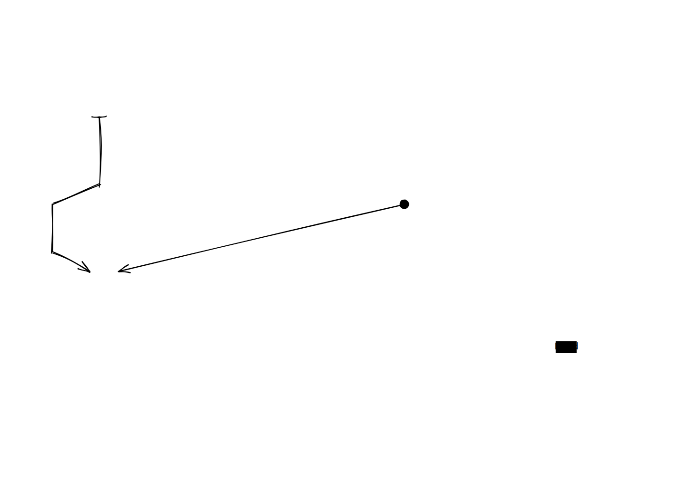

This page provides a high-level overview of the structure and components of the Wi-Fi Center application.
master.py:
The main
entry point of
the application. It initializes the PyQt6 application, sets up
the main window, and integrates various components.
core/:
Contains the core logic for
Wi-Fi operations and application features.
available_networks.py:
Opens the Wi-Fi manager using the specified terminal.
command_processor.py:
Handles parsing and
execution of commands entered in the command bar.
inline_autocomplete.py:
Implements the
autocompletion feature for the command bar.
wifi_connect.py
/
wifi_disconnect.py
/
wifi_networks.py:
Modules likely handling
the specifics of connecting, disconnecting, and managing
network profiles using the underlying Wi-Fi library
(e.g., `pywifi`).
wifi_scanner.py:
Main script for
the background scanner tray application.
wifi_scanner_cy.pyx:
Cython source
file for optimized scanning logic.
setup.py:
Used to build the Cython
extension.
wifi_data.json: Output file where
the scanner writes detected network data.
helpers/:
Contains utility modules
used across the application.
command_bar_enabled_state.py:
Helper function to control the command bar's enabled state.
output_box_animation.py:
Defines the
animated output box widget.
center.py,
message_box.py,
path_utils.py,
system_commands.py,
win_style_helper.py,
blurWindow.py:
Various helper functions for
UI centering, message dialogs, path manipulation,
executing system commands, applying Windows styles, and
window blur effects.
docs/:
Contains the documentation
source files and the documentation viewer application.
docs_app.py:
The PyQt6 application that
displays this documentation.
index.html:
The main HTML file for the
documentation viewer interface.
pages/:
Contains
the individual HTML
documentation pages (like this one).
assets/:
CSS, JavaScript, images, and icons for the
documentation viewer.
styles/:
Contains Qt Style Sheet
(QSS) files for theming the main application UI.
assets/:
Contains icons and other
graphical assets for the main application UI.
requirements.txt:
Lists the Python
dependencies required to run the project.
The following diagram illustrates the basic flow of information and interaction between key components:
Note: This is a simplified representation. Actual interactions might be more complex.